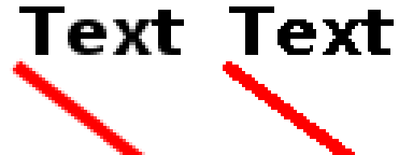
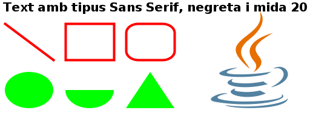

Tots els components sobre els quals es pot dibuixar tenen un objecte d'aquest tipus: panells, butons...
Graphics conté mètodes bàsics per dibuixar línies, text i imatges:
I també té els equivalents per omplir figures: fillRect() ... fillArc().
Graphics2D és filla de Graphics i conté alguns mètodes més:
I altres mètodes per canviar l'origen de coordenades, escalar, girar, activar antialiasing...
Diferència entre activar o no l'antialiasing (millora la qualitat però és més lent):

Primer cal obtenir l'objecte d'aquest tipus del component sobre el qual es vol dibuixar.
En alguns casos (per exemple amb JPanel), es pot sobrecarregar el mètode paintComponent(Graphics g) o similar (paint(g), update(g)...).
Cada cop que cal redibuixar el component, la finestra crida algun d'aquests mètodes.
En altres casos que es veuran més endavant, es pot obtenir l'objecte Graphics amb el mètode getGraphics() o getDrawGraphics() del component corresponent.
@Override
protected void paintComponent(Graphics g) {
int x, y;
final int P_WIDTH = 600;
final int P_HEIGHT = 300;
final int WIDTH = 80;
final int HEIGHT = 60;
final int MIDA = 2 * WIDTH;
super.paintComponent(g); // Crida el mètode del pare per si ha de dibuixar
Graphics2D g2 = (Graphics2D) g; // Converteix a Graphics2D per tenir més funcions
// Activa antialiasing per suavitzar les línies
g2.setRenderingHint(RenderingHints.KEY_ANTIALIASING, RenderingHints.VALUE_ANTIALIAS_ON);
// Pinta tot el fons de blanc
g2.setColor(Color.white);
g2.fillRect(0,0,P_WIDTH,P_HEIGHT);
x = 10;
y = HEIGHT / 3;
g2.setColor(Color.black);
g2.setFont(new Font(Font.SANS_SERIF, Font.BOLD, HEIGHT/3));
g2.drawString("Text amb tipus Sans Serif, negreta i mida " + (HEIGHT/3), x, y);
g2.setStroke(new BasicStroke(4));
g2.setColor(Color.red);
y += HEIGHT / 3;
g2.drawLine(x,y,x+WIDTH,y+HEIGHT);
x += WIDTH + 20;
g2.drawRect(x,y,WIDTH,HEIGHT);
x += WIDTH + 20;
g2.drawRoundRect(x,y,WIDTH,HEIGHT,WIDTH/2,HEIGHT/2);
x = 10;
y += HEIGHT + 20;
g2.setColor(Color.green);
g2.fillOval(x,y,WIDTH,HEIGHT);
x += WIDTH + 20;
g2.fillArc(x,y,WIDTH,HEIGHT,180,180);
x += WIDTH + 20;
g2.fillPolygon(new int[]{x,x+WIDTH,x+WIDTH/2}, new int[]{y+HEIGHT, y+HEIGHT, y},3);
x += WIDTH + 50;
y -= 2 * HEIGHT - 20;
g2.drawImage(imatge, x, y, MIDA, MIDA, null);
}
La imatge resultant és la següent:

L'exemple anterior sempre dibuixa el mateix.
En el següent exemple, cada cop que l'usuari fa clic en un punt de la finestra, s'afegeixen les coordenades del punt a una llista i es crida el mètode repaint().
Aquest mètode crida a paintComponent(), que dibuixa un quadrat per cada coordenada de la llista.
public class DibuixUsuari extends JPanel {
static final int P_WIDTH = 600;
static final int P_HEIGHT = 400;
static final int COSTAT = 100;
ArrayList<Point> punts = new ArrayList<>();
public DibuixUsuari() {
setPreferredSize(new Dimension(P_WIDTH, P_HEIGHT));
setBackground(Color.white);
addMouseListener(
new MouseAdapter() {
@Override
public void mouseClicked(MouseEvent e) {
punts.add(e.getPoint());
repaint();
}
}
);
}
@Override
protected void paintComponent(Graphics g) {
super.paintComponent(g); // Crida el mètode del pare per si ha de dibuixar
Graphics2D g2 = (Graphics2D) g; // Converteix a Graphics2D per tenir més funcions
g2.setStroke(new BasicStroke(4));
g2.setColor(Color.blue);
for (Point p : punts) g2.drawRect(p.x,p.y,COSTAT,COSTAT);
}
public static void main(String[] args) {
JFrame f = new JFrame("DibuixUsuari");
f.getContentPane().add(new DibuixUsuari());
f.setDefaultCloseOperation(JFrame.EXIT_ON_CLOSE);
f.setResizable(false);
f.pack();
f.setVisible(true);
}
}